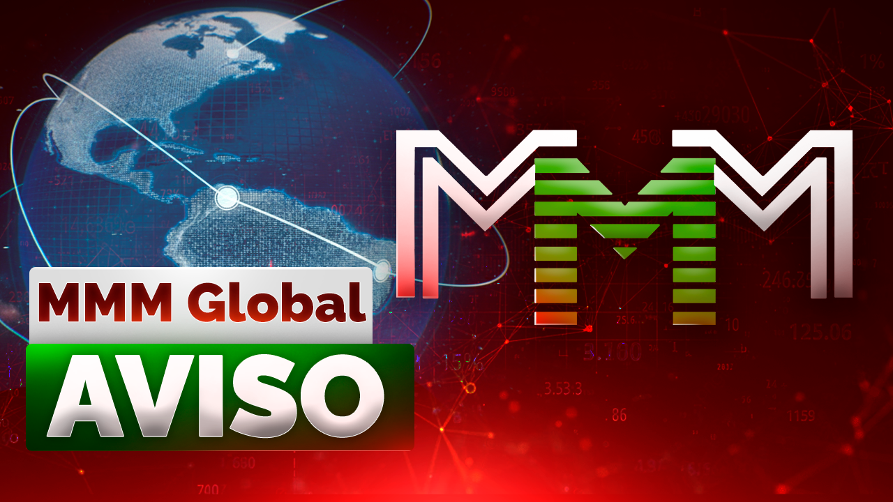

AVISO!
Registo no bot do Telegram: @Mavrodi_robot
"Só há duas maneiras de viver a vida.
A primeira é como se os milagres não existissem.
A segunda é como se tudo fosse um milagre."
O mundo é ruim? Então faça-o melhor!

"Ausência de bancos de dados, servidores e centros de controle unificados. Dispersão! Uma teia. É exatamente isso que torna o Sistema aquilo que eu originalmente planejei que fosse. Indestrutível e invencível. Por nenhum serviço secreto e por nenhuma autoridade. Do mundo inteiro. Ajam! Ajam! ajam! ajam! Nós Podemos Muito! Juntos".
Sergey Panteleevich Mavrodi
Para começar, assista a este vídeo:
Atenção! O MMM Global é uma associação informal de pessoas de todo o mundo, uma caixa global de ajuda mútua. No MMM Global, as pessoas ajudam umas às outras de forma gratuita (sem garantias nem promessas) com seus próprios fundos, apenas na esperança de receber mais ajuda do que prestaram.
‼️A participação no MMM Global envolve risco absoluto: você pode transferir seus fundos para outra pessoa (um participante do MMM Global) e pode acabar não recebendo nada de volta, sem nenhuma explicação!
Eu, Danil Yusupov, Não lhe dou garantias, ocultas ou explícitas, de que receberá absolutamente nada! No MMM Global não há condições de prazo ou reembolso, não há contratos (vocês transferem seus fundos gratuitamente, sem garantias nem promessas e diretamente para outras pessoas, o que não é proibido por lei).
O MMM Global não possui nenhuma pessoa jurídica, consequentemente, não há uma conta única para onde fluem os fundos de todos os participantes — aqui existem apenas pessoas (participantes do MMM Global) que transferem seus fundos gratuita (sem garantias nem promessas) e diretamente uns aos outros: de sua carteira de criptomoedas para a carteira de criptomoedas de outra pessoa. O que, repito, é absolutamente legal (aliás, é praticamente impossível proibir por lei a transferência gratuita (sem garantias nem promessas) de fundos próprios para outras pessoas).
Na verdade, este é um sistema de Assistência Mútua em sua forma mais pura.
Aqui eu apenas escrevo e expresso minha opinião pessoal, faço algumas suposições, compartilho meus pensamentos, não garanto nem prometo nada, não presto nenhum serviço e não tento vender nada a ninguém. E, aliás, convido a todos a fugirem daqui o mais rápido possível. Por que diabos ajudar uns aos outros!? Enfim, fujam logo e nunca mais voltem aqui! E NÃO PARTICIPEM do MMM Global!
Não fugiram? Continuem lendo! Ou não. Olha só mais uma coisa. Um pequeno aparte.
Antes de tudo. Para sua informação. Nós ainda vivemos, até hoje, em uma sociedade escravocrata. Assim como há milhares de anos. Nada mudou substancialmente desde então. Exceto que agora as correntes são econômicas. Financeiras, para ser mais preciso. Essa é a única diferença. No mais, tudo continua igual. Existem escravos e existem Os anfitriões. Os anfitriões são aqueles que imprimem o dinheiro. Surpresos?
Continuando. O que é o dinheiro? Nada! Nihil. Um fantasma. O vazio! Apenas papéis coloridos, lindamente decorados, com marcas d'água, brasões e ilustrações. (Geralmente retratos de grandes homens. Para parecer mais sólido. :-)) Eles não são lastreados em absolutamente nada e são impressos pelos Os anfitriões em qualquer quantidade e a seu bel-prazer.
Os anfitriões então distribuem esses papéis aos escravos como "pagamento pelo trabalho". E ainda os repreendem paternalmente, com um ar sério e importante, dizendo que "o dinheiro deve ser ganho honestamente". E os escravos obedecem. Zumbificados desde o berço por todos os tipos de livros didáticos "corretos", livrinhos, filmes, meios de comunicação de massa, enfim, por toda essa máquina estatal gigantesca, bem azeitada e impiedosamente eficiente de lavagem cerebral (até os pais participam involuntariamente dessa "socialização" — transformando com as próprias mãos seus filhos puros e inocentes nos mais autênticos escravos!). Os escravos não conhecem outra coisa, e lhes parece que o mundo é assim e que não pode ser de outro jeito. Mas pode ser diferente!!
O que é uma "pirâmide financeira"? Por que as "pirâmides" são anatemizadas em todos os lugares, em todos os Estados sem exceção? Mesmo nos mais leais, livres e democráticos? Por que lutam contra elas de forma tão implacável, persistente e consistente? Jogos de azar e drogas são permitidos em alguns países! mas as "pirâmides" são proibidas em todos os lugares! Em toda parte. Por quê? Há algo nisso de diretamente misterioso e místico. Nunca pararam para pensar?
Então, por quê? Porque "as pessoas vão sofrer"? Besteira!! Quem se importa com as "pessoas"? Essa gentalha, esse protoplasma que come e se reproduz, esse rebanho humano de bilhões! Esses escravos mudos, oprimidos e submissos! Se eles vão "sofrer" ou não. Quem se importa com isso?!
Sem falar que, desde quando eles teriam que sofrer? É apenas mais um mito, um dos muitos, da série "ganhar dinheiro honestamente". A ideia de que as pessoas numa "pirâmide" obrigatoriamente devem "sofrer". E que a própria "pirâmide" deve desmoronar! (E quando? Quando envolver o mundo todo? Bem, enquanto você tiver pelo menos um conhecido não envolvido, durma tranquilo. E isso também não é verdade. Ela não vai desmoronar! Pelo contrário, vai ficar ainda mais estável. :-))
Então por que, afinal? De onde vem tanto ódio e uma rejeição tão furiosa? Hein? Querem saber? Querem que eu revele o maior e mais terrível segredo burguês? Só que... shhh!.. Nem uma palavra a ninguém! Combinado? Tudo bem, então escutem. :-))
PORQUE AS "PIRÂMIDES" PRODUZEM... DINHEIRO!!! Sim, sim, sim, é exatamente isso! DINHEIRO!! Do nada, do ar! Exatamente como os próprios Os anfitriões o produzem do nada, do ar. E também com a ajuda de "pirâmides"! Não é à toa que o dólar é uma "pirâmide"! Simplesmente não existem outros mecanismos para a produção de dinheiro. Nenhum! Apenas "pirâmides financeiras". Não acreditam? Então me digam uma única moeda mundial que não seja uma "pirâmide". Uma única! O euro?.. a libra?.. o yuan?.. Hein?.. O franco suíço, talvez?.. O quê?!
Sim, as "pirâmides" produzem dinheiro. E isso só é permitido Os anfitriões. É a sua prerrogativa sagrada e inalienável e o seu monopólio inabalável. O direito de produzir dinheiro é o que os torna Os anfitriões. E aqui, quem o produz são os escravos!!!
Como resultado, tudo desmorona. Rompe-se instantaneamente toda aquela teia pegajosa de mentiras e hipocrisia que envolve o ser humano de forma cuidadosa, meticulosa e incansável a cada minuto, a cada segundo, desde o momento de seu nascimento até a sua morte. O véu cai. A ilusão se dissipa. O ser humano descobre de repente que a jaula financeira está escancarada! Ele é livre! No começo, ele apenas se espanta e não acredita em si mesmo: como é que ele recebe dinheiro assim, de graça, por nada? E ele não precisa mais ficar sentado nessa jaula? "Trabalhar honestamente"? Isso é impossível por princípio, não pode ser! A vida toda, desde o berço, lhe disseram que isso é impossível!! Que é preciso labutar!.. trabalhar com o suor do rosto!.. (para quem? :-)) ganhar!.. honestamente!... Isso é o certo, isso é justo! E só então você recebe algo. Algo lhe será dado. (Jogado! Das sobras. :-)) E agora, de repente, descobre-se que não é preciso?! Que isso não é nem um pouco obrigatório?! Como assim??!!.. Depois ele começa a pensar. Então quer dizer que o dinheiro não é a medida do trabalho? Já que podem simplesmente distribuí-lo, jogá-lo, dá-lo de presente à vontade? E o mundo não desmorona por causa disso! E o que são, então? Se não são uma medida do trabalho?.. Será que é mesmo... apenas papel? Apenas papéis coloridos??!! Em seguida, ele olha ao redor e vê pessoas ao seu lado, ainda trabalhando de forma estúpida e monótona, sem levantar a cabeça, nas jaulas vizinhas... por esses papéis... por esses papéis inúteis... Pessoas que até ontem eram seus amigos, parentes... E hoje um abismo os separa. Eles ainda são escravos, e ele não! Ele provou o fruto proibido da liberdade! Ele descobriu o que é sentir-se livre. Sentir-se Humano! E disso ele nunca mais vai se esquecer.
Em outras palavras, as "pirâmides" tornam as pessoas Humanas. Elas as tornam LIVRES! Elas produzem LIBERDADE! Geram e a trazem! Para as pessoas. Pessoas comuns, ordinárias, simples. (Como as pessoas vão usar essa liberdade, já é outra questão.) Esta é a causa raiz. De tudo! É exatamente por isso que as "pirâmides financeiras" são tão temidas e odiadas. Os anfitriões. Essa é a essência de tudo.
P.S. Aliás, não é à toa que coloco "pirâmide financeira" entre aspas em todos os lugares. É apenas para facilitar o entendimento, uma expressão conveniente que todo mundo conhece. Em todas as leis dos países desenvolvidos há uma definição clara de "pirâmide financeira", que pressupõe a promessa de alta rentabilidade. É exatamente por isso que o MMM Global não é uma pirâmide financeira — aqui não há garantias nem promessas. Ao mesmo tempo, já não é segredo para ninguém que todas as instituições financeiras sem exceção — bancos, seguradoras, fundos, etc. — são pirâmides financeiras puras, e só são legais porque pertencem Os anfitriões, que são os mesmos que escrevem as leis.
P.P.S. A propósito, é exatamente por isso que as autoridades de todos os países lutaram tão ativamente contra Sergey Mavrodi e seu MMM! Tanto nos anos 90 do século XX quanto nos anos 10 do século XXI. Rotularam-no de "fraudador", "vigarista" e por aí vai. A mídia não parava de jogar lama nele e no MMM. Sem parar!!.. Não acham tudo isso muito, muito estranho? Suspeito? Aqueles que levaram o Rússia à sua situação atual com seu "talento" econômico-financeiro e poder político — nossos anjos brancos e fofinhos — rotulam um Homem de "fraudador" com tanta veemência? Tentam difamá-lo? Por quê? O que ele fez de tão grave? A ponto de poder ser julgado duas vezes pela mesma coisa?! Ele já cumpriu sua pena, mas mesmo assim continuaram aceitando ações cíveis das pessoas contra ele?! Ele, como pessoa física, emitia bilhetes MMM na época?! E ele nunca deu nenhuma garantia — aqui tudo sempre foi e será honesto e transparente. E os participantes sabem muito bem disso! E entendem o que realmente está acontecendo. E quem no final das contas enganou todo mundo (e mais de uma vez) — também é de conhecimento geral. ...Na época, esse fato me causou uma forte impressão. "Como assim? — eu me perguntava — será que um único Homem pode atrapalhar todo um sistema? Será que ele representa um perigo tão grande assim?!" (afinal, será que dedicariam tanta atenção a alguém inofensivo? criariam leis especificamente para a atividade dele?). Reflitam sobre isso no seu tempo livre.
AVISO!!!
Antes de prestar ajuda voluntária e gratuita ("comprar" Mavro abstratos), cada participante é obrigado a ler este aviso!
CUIDADO!
Aqui as pessoas transferem seu dinheiro umas às outras de forma GRATUITA (Sem garantias nem promessas)!
Ao participar do MMM Global, você corre um risco extremo, pois transfere seus fundos gratuitamente (Sem garantias nem promessas) para outras pessoas. Não se esqueça disso!
No MMM Global Não há garantias ou promessas, expressas ou Formulário oculto! Não há contratos! Não há organização! Não há captação de recursos financeiros e (ou) outros bens! Não há investimentos! Nenhuma atividade empresarial! Nenhuma rentabilidade! Nenhum lucro ou ganho! Nenhuma atividade de investimento! Não há registro estatal e, portanto, também não há pessoa jurídica! Não há operações com valores mobiliários, nenhum relacionamento com participantes profissionais do mercado de valores mobiliários, você não adquire nenhum valor mobiliário! (E você precisa deles?) Não há absolutamente nada!! Eu apenas recomendo que as pessoas se ajudem voluntária e gratuitamente (Sem garantias nem promessas) com seus fundos pessoais disponíveis.
As pessoas transferem voluntária e gratuitamente (Sem garantias nem promessas) seus fundos para outras pessoas exatamente iguais a elas, prestando-lhes ajuda financeira na medida de suas possibilidades nestes tempos tão difíceis. Sem nenhuma garantia, obrigação ou promessa — simplesmente transferem e pronto! O dinheiro é delas, propriedade privada — então as pessoas fazem o que querem com ele. Umas transferem seus fundos para outras. Sem contratos, sem condições de prazo ou reembolso, etc. — sem garantias, obrigações e promessas, repito. É assim que elas se ajudam neste momento difícil. É impossível proibir tais transferências por qualquer lei! Pois seria preciso proibir a propriedade privada. E tais transferências não estão sujeitas a nenhum imposto, porque não há fonte de renda aqui! Não, não e não! E não pode haver. Em princípio. Pelos séculos dos séculos. Amém. Entenderam?
Eu não lhes dou nenhuma garantia, nem promessa. Nem explícita, nem implícita. (Ao contrário, por exemplo, dos bancos. Que dão! De bom grado. Dizem que eles nunca vão à falência.)
Falando de modo geral, qualquer garantia nesta vida é uma mentira. Onde, por exemplo, estão as garantias de que o dia de amanhã vai chegar?..
Não crio falsas expectativas de que você possa enriquecer rapidamente aqui. Pelo contrário, você vai perder tudo! Você está transferindo seus fundos voluntária e gratuitamente (Sem garantias nem promessas) para outra pessoa exatamente igual a você — prestando a ela uma ajuda financeira possível. Só isso! Esqueça esse dinheiro!! A partir deste momento, o dinheiro é dela, e NÃO seu!! Podem não lhe transferir o dinheiro sem dar explicações!! Agora você só tem os Mavro abstratos, cuja "cotação" reflete apenas a sua possibilidade de solicitar ajuda, nada mais. Ninguém lhe garante que essa ajuda será prestada. Pois tais garantias não existem na natureza.
Aqui não há regras. A única regra é: não há regra nenhuma! Mesmo que você siga rigorosamente todos os meus conselhos e recomendações gratuitas, você ainda pode perder tudo: podem não transferir os fundos para você, podem não lhe prestar ajuda. Sem motivo ou explicação alguma.
Ao que tudo indica, eu nem sou totalmente são. Sou um maluco! (Se eu fosse normal, teria me metido?)
Segundo as garantias de todos os principais financistas, economistas, especialistas, etc., etc., é impossível fornecer em princípio "rentabilidade" tão alta (as "cursos" dos Mavro abstratos PRESUMIVELMENTE crescem a um ritmo de 20% ao mês!) por princípio, e tudo isso é pura fraude e uma "audaciosa e descarada" vigarice.
Da qual não se deve participar de forma alguma e sob nenhuma circunstância!!! Então escutem as pessoas inteligentes — NÃO PARTICIPEM AQUI! NÃO transfiram seus fundos para ninguém!
Como tudo isso funciona — eu mesmo não sei nem faço ideia, e não consigo “explicar” nada. Quem sabe como! E será que funciona mesmo?! Não se sabe. Mas no MMM Global, pelo menos, funcionava. Em todo o mundo. Embora lá tudo crescesse duas vezes mais rápido.
Como Sergey Mavrodi conseguia fazer tudo isso, eu não compreendo. Não entendo. Não faço ideia. (Eu mesmo fico surpreso, caramba!!) Ele, segundo suas próprias palavras, era como um Aladino analfabeto que encontrou uma lâmpada mágica. Esfregou — apareceu o gênio. Realizou todos os desejos. E voltou a se esconder na lâmpada. Mas de onde veio esse gênio e qual é a sua natureza (e como ele cabe dentro dessa lâmpada, que o parta?!) — Aladino não sabe. Chamo a sua especial Atenção para o fato de que eu nem sou o Sergey Mavrodi! E como eu, o desconhecido Danil Yusupov, poderia chegar aos pés de Aladino e sua lâmpada?!
Por que estou contando tudo isso? não para quê! Só comichão. Veio a ideia, dá vontade de falar. Mostrar como sou esperto. "Bom, é maluco! O que fazer com ele?"
Mas vocês, vocês são pessoas sensatas, não são? Vocês não vão se deixar envolver! Não vão deixar que os envolvam!! Não é? Não vão deixar? Verdade?
E, aliás, eu estou mentindo. Conhece esse paradoxo? Se eu minto, digo a verdade, e se digo a verdade, estou mentindo. Uma afirmação simultaneamente verdadeira e falsa. O famoso paradoxo do mentiroso!
Resumindo. Eu os conclamo, os convenço, os peço e os imploro:
NÃO PARTICIPEM DESSE MALDITO MMM Global!
REPITO EM PORTUGUÊS E BEM NO OUVIDO QUE VOCÊS DEVEM OUVIR:
ESQUEÇAM ISSO!
CONTINUEM VIVENDO COM SEU ÚNICO SALÁRIO!
NÃO PARTICIPEM! NÃO PARTICIPEM! NÃO PARTICIPEM!
NÃO! NÃO!! NÃO!!!
FUJAM O MAIS RÁPIDO POSSÍVEL DESTE SITE/BLOG/CANAL DO TELEGRAM/BOT DO TELEGRAM E NUNCA MAIS VOLTEM AQUI!!!!!
ESTÁ TUDO CLARO?
Se você também for maluco e, depois de todos estes meus avisos, argumentos, pedidos e súplicas... súplicas?.. ainda assim decidir transferir gratuitamente seus fundos para outra pessoa desconhecida e, assim, participar do MMM Global (nem acredito que existam pessoas assim!), então clique: AQUI
P.S. Ah, sim! O MMM Global atua de forma absolutamente LEGAL. Repito mais uma vez — as pessoas transferem voluntária e gratuitamente (Sem garantias nem promessas) seus fundos (cripto) para outras pessoas exatamente iguais a elas. Só porque sim! Sem garantias, sem obrigações, sem promessas, sem condições de prazo ou reembolso, sem contratos, etc. É propriedade privada delas, então fazem com ela o que bem entenderem, o que acharem necessário. Assim, umas pessoas prestam a outras uma ajuda financeira gratuita (Sem garantias nem promessas) e possível, só isso. Portanto, não há e não pode haver nenhuma captação de recursos ou outros bens. Todos os artigos do Código Penal passam longe. Os participantes do MMM Global transferem voluntária e gratuitamente (Sem garantias nem promessas) seus fundos para outras pessoas. Tudo isso é legal! Pois não viola a lei. Eu mesmo não capto nada nem ninguém para lugar nenhum — eu apenas falo abertamente que, na difícil situação econômica de hoje, é necessário ajudar uns aos outros! E eu mesmo ajudo — com conselhos, recomendações e consultorias.
P. P. S. Com certeza todos se perguntam: para que diabos eu, Danil Yusupov, preciso de tudo isso? Qual é o meu objetivo? Vou explicar! Na verdade, é tudo muito interesseiro. E até primitivo. Mas não, não é dinheiro! Como vocês já devem ter pensado. Dinheiro, numa escala dessas, já não cola. Como Sergey Panteleevich Mavrodi bem observou em sua época.
A vida me ensinou que não se pode ser rico entre pobres, honesto entre mentirosos, culto entre ignorantes, saudável entre doentes, corajoso entre covardes, feliz enquanto se está cercado de pessoas infelizes. Não se pode! Pois todos Nós somos interdependentes! E não só Nós. Tudo ao redor, todo este mundo é permeado por princípios de interdependência! Tudo está interligado em todos os níveis. E tudo sempre busca o equilíbrio. Portanto, se você quer viver na abundância, primeiro precisa garantir essa abundância para as pessoas ao seu redor (mesmo que pela lógica superficial de que elas não queiram te roubar ou até te matar por inveja). Entendem, um faminto não pode doar, pois não tem o que dar! — uma pessoa não pode pensar no espiritual e se desenvolver enquanto passa fome — primeiro é preciso alimentar as pessoas de forma básica. Garantir suas necessidades materiais fundamentais. Para que, mais tarde, elas tenham tempo para se tornarem cultas, autossuficientes, corajosas, saudáveis, honestas e ricas, tanto material quanto espiritualmente! Pessoas Felizes! Eu vou mostrar a todos que, interagindo de uma determinada maneira, AGINDO DE FORMA HONESTA E ABERTA, mesmo hoje é possível Viver como Gente! E não apenas sobreviver, arrastando uma existência escrava e vil. Pois só então eu mesmo me tornarei Humano. Eu só quero estar cercado por Pessoas Racionais, e não por escravos oprimidos. Quero uma Vida Humana simples hoje e agora, e não em algum lugar no futuro (na «vida após a morte»). Vocês mesmos não estão cansados de todo esse horror mentiroso e total? Hein? Não estão cansados de incutir em si mesmos o princípio escravo e vil de «.eu não posso fazer nada a respeito.»? Não estão enjoado de aguentar toda essa humilhação de crédito e hipoteca, da qual todos nós somos «involuntariamente» participantes? Não estão cansados de cavar a própria cova com as próprias mãos, apoiando este sistema injusto?!.. «Não há saída!» Claro que há! Aqui está ela! Um sistema alternativo! Honesto e aberto! O ANTISISTEMA!.. Manipular pessoas, transformando-as em escravos estúpidos e submissos que não fazem perguntas demais, é muito fácil (enganar a todos e depois roubá-los). Muito mais difícil é tornar as pessoas Livres. (Assim como pensar em algo bom é muito mais difícil do que em algo ruim. Os pensamentos ruins parecem vir sozinhos. Nunca pararam para pensar por que isso acontece?.. Ora, para pensar em algo bom, é preciso fazer esforço: usar a imaginação, a lógica, etc. Aliás, para acreditar em algo bom e gentil, basta fazer o bem aos outros! É preciso agir! Fazer esse «bem». E não ficar de braços cruzados, consolando e justificando a si mesmo, dizendo «…eu não posso fazer nada a respeito…» Claro que pode! Tudo o que você vê ao seu redor, tudo o que você usa no dia a dia, foi criado por pessoas que agiram apesar de tudo. Agiram contra tudo! Contra todos esses ditos escravos de «você não vai conseguir», «hahaha, você é maluco, hehehe», etc.). Sim, tudo isso é complexo, difícil, mas é possível! Assim como é possível todo esse sistema mentiroso existente, essa maldita distopia financeira e escrava (aliás, o «mal» consegue resultados, entre outras coisas, porque o bem se mantém humildemente inerte), também é possível o Antissistema — honesto e aberto. Livre! Humano! E vale a pena viver e lutar por ele. Claro, não se pode mudar o mundo sozinho. Só se pode mudar a si mesmo, sua atitude, seus princípios, pontos de vista e visão de mundo. Interagindo de forma construtiva uns com os outros e conscientes da interdependência total. Foi exatamente por isso que Sergey Mavrodi chamou o MMM-2011 em sua época, «decifrou»: Nós Podemos Muito!
NÓS! TODOS JUNTOS!!
Nesta vida, tudo depende de cada um de Nós.
Amém.
Registo no bot do Telegram: @Mavrodi_robot